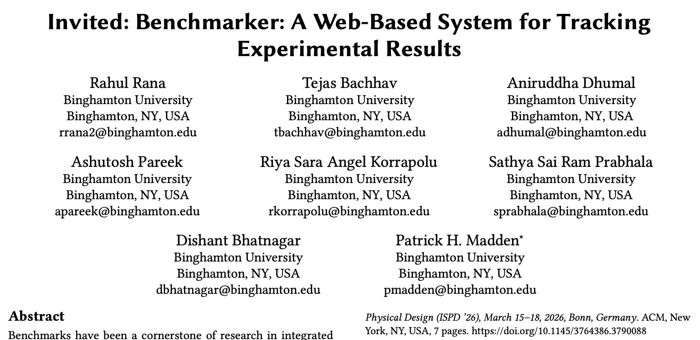
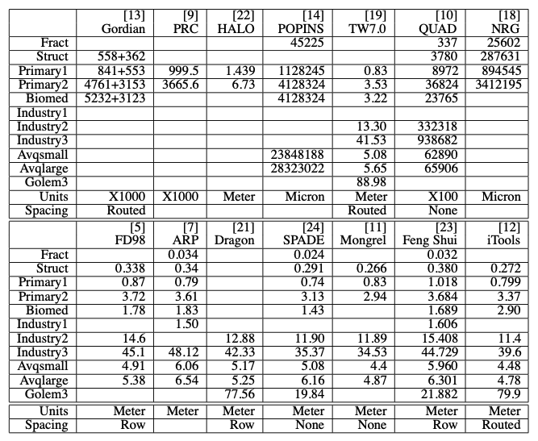
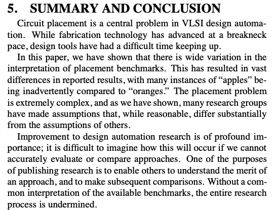
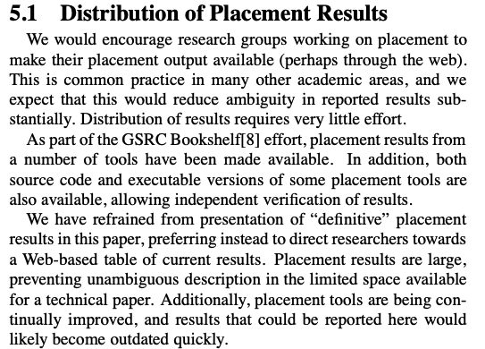
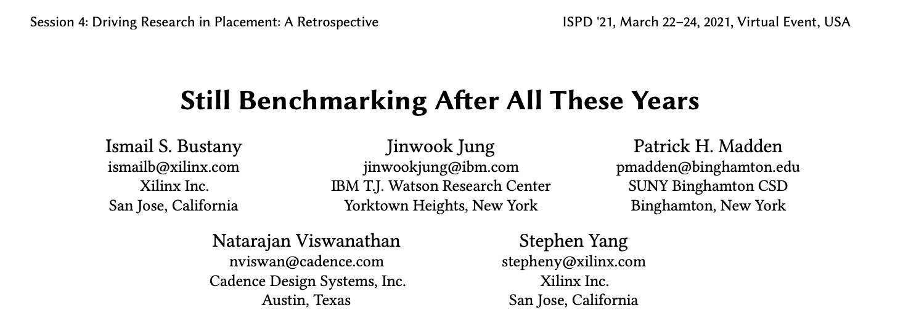
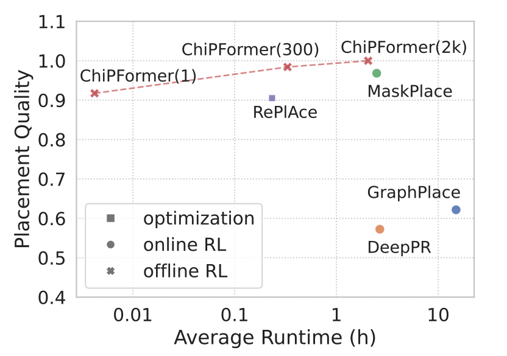
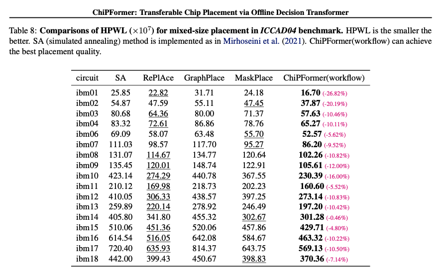
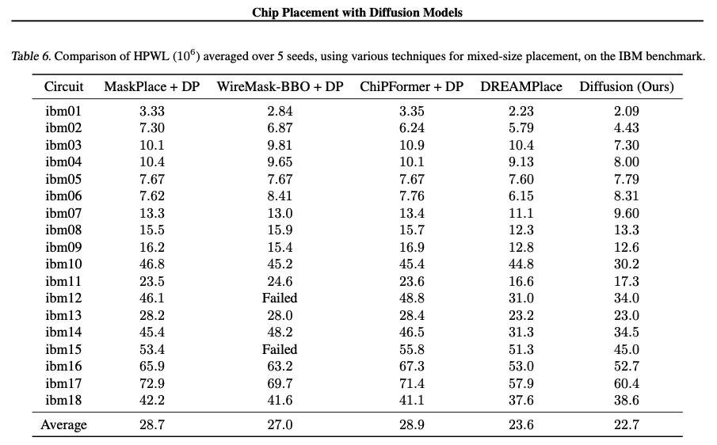
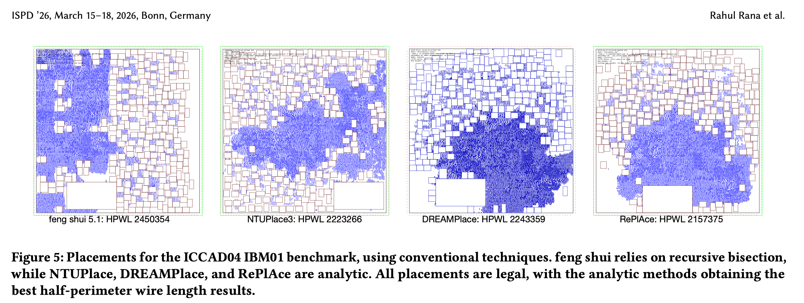
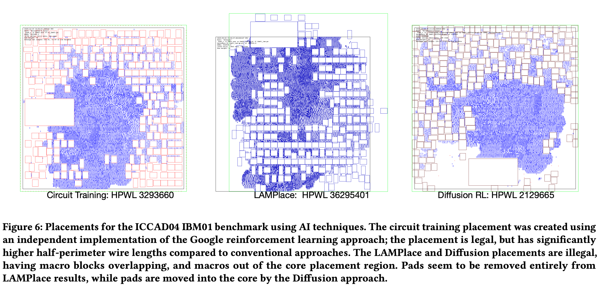

More than twenty-five years ago, I started working on circuit placement (after having spent entirely too much time working on global routing).
To have an idea of what sort of results I'd need to get a paper published, I started gathering results from recent papers into an Excel spreadsheet. And nothing made sense.

http://dx.doi.org/10.1145/369691.369727
I emailed a dozen different groups to ask how they computed their results. Everyone replied with a variation of "we use the standard methods."
Surprise. There were no "standard methods."
This was the late 1990's. The web had been around for only a few years. Circuit benchmarks were often distributed on magnetic tapes. If you wanted to submit a paper to DAC, you had to snail mail physical printed copies. Or drive to the LAX airport, because the FedEx office stayed open late.
Many people knew that the situation wasn't ideal, and that there was miscommunication. I said the quiet part, out loud, and found that while it was a little uncomfortable, there was broad agreement that we could and should do things better.


ISPD contests starting in 2005. Benchmark suites were created each year, and many groups submitted tools. The tools were tested by the independent group, with all results being carefully checked.
Rapid progress, new ideas, experimental results that were the gold standard. Good times.

The tracking of research results that I had hoped for didn't really materialize. In 2001, the web was unbelievably annoying to work with.
Times have changed.
https://cs.binghamton.edu/~pmadden/benchmarker
....

ChiPFormer ICML 2023, https://icml.cc/virtual/2023/poster/25027

ChiPFormer ICML 2023, https://icml.cc/virtual/2023/poster/25027

Diffusion, ICML 2025, https://arxiv.org/pdf/2407.12282
Note the exponent. It should be 10e5, not 10e7, if the RePlAce result is to make any sense. The authors confirmed that the exponent is a typo.
Anyone who reads the ChiPFormer paper, and then implements a placer... If the result is less than 100x worse than the results in the table, they might mistake it as a massive advance.
The ChiPFormer paper has been cited 90+ times in the past couple of years. To the best of my knowledge, no one else has noticed that the results could be off by 100x.


I'm currently wrangling some problematic papers on floor planning. There are some TCAD submissions where I'm the AE, and the wrongness is shocking.
AI conferences are getting overwhelmed by submissions on a multitude of topics. There's no way to have reviewers who understand the submissions, so everything is getting thrown to AI for review.
There's intense FOMO in both conferences and journals. Even half-baked ideas get accepted, if they use AI.
I've tried to make Benchmarker generic, so that it can be used in other areas. We're drowning in a sea of AI slop.
Say the quiet part out loud. If something looks wrong, say something.
We all want to have correct experimental results, so that we know what works, and what doesn't work. If something is wrong, we should step up and fix it.
Make experimental results easily visible, and in a timely fashion. That's my goal with the Benchmarker project.
With modern GPUs, we have hundreds, thousands, tens of thousands of compute cores!
Surely, all that CPU power changes everything!